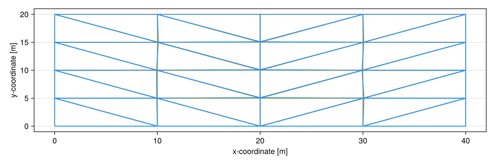
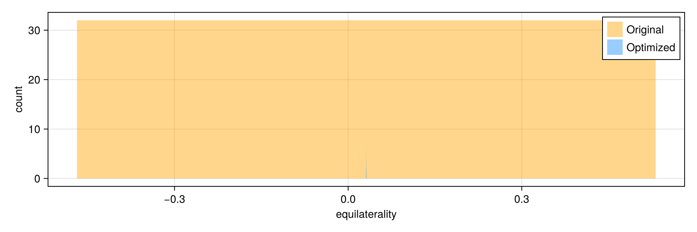
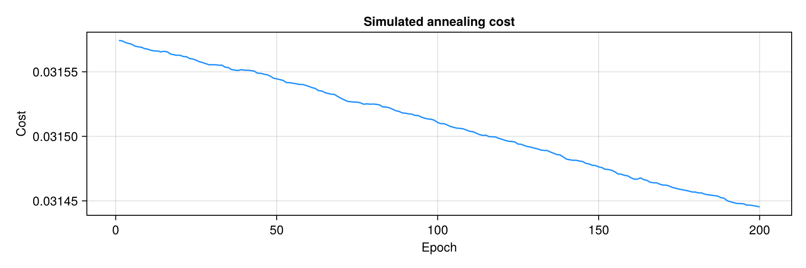

Mesh Optimization
This page demonstrates the mesh optimization API and its effect on error propagation over a domain. Note that error is measured alternatively via circumcentric or barycentric subdivided meshes; this influences the interpretation of error propagation.
using CairoMakie
using CombinatorialSpaces
using Random
Random.seed!(0)
set_theme!(size=(900, 300))
# Start from the mirrored porous-convection mesh used in tests and examples.
# The `(40.0, 20.0)` domain matches the original optimization experiments.
s_orig = binary_subdivision(mirrored_mesh(40.0, 20.0))
orient!(s_orig)
s_orig[:edge_orientation] = false
s = deepcopy(s_orig)
# Use the same optimization scale used in tests; 200 epochs keeps docs runtime low
# while still showing visible improvement.
eqs = optimize_mesh!(s, SimulatedAnnealing(ϵ=1e-3, epochs=200))
nothingWireframe comparison
function wf(s_orig, s)
f = Figure()
ax = CairoMakie.Axis(f[1,1], xlabel="x-coordinate [m]", ylabel="y-coordinate [m]")
wireframe!(ax, s_orig, color=:orange)
wireframe!(ax, s, color=:dodgerblue)
f
end
wf(s_orig, s)
Equilaterality distribution
edge_lengths = CombinatorialSpaces.MeshOptimization.edge_lengths
equilateralities = CombinatorialSpaces.MeshOptimization.equilateralities
function eqs_dist(s_orig, s)
f = Figure()
ax = CairoMakie.Axis(f[1,1], xlabel="equilaterality", ylabel="count")
hist!(ax, equilateralities(edge_lengths(s_orig)); color=(:orange, 0.45), label="Original")
hist!(ax, equilateralities(edge_lengths(s)); color=(:dodgerblue, 0.45), label="Optimized")
axislegend(ax, position=:rt)
f
end
eqs_dist(s_orig, s)
Cost per epoch
f = Figure()
ax = CairoMakie.Axis(f[1,1], xlabel="Epoch", ylabel="Cost", title="Simulated annealing cost")
lines!(ax, eachindex(eqs), eqs, color=:dodgerblue)
f
Downstream simulation plotting helpers
These snippets are the original downstream plotting helpers used with simulation outputs:
function compare_integrals()
f = Figure()
ax = CairoMakie.Axis(f[1,1],
title="Error in integral over dome surface",
xlabel="Time [s]",
ylabel="Error")
lines!(ax, range(0, tₑ; length=100), map(range(0, tₑ; length=100)) do x
abs(sum(s0 * soln(x).C) - sum(s0 * soln(0).C))
end, label="Original")
lines!(ax, range(0, tₑ; length=100), map(range(0, tₑ; length=100)) do x
abs(sum(s0_orig * soln_orig(x).C) - sum(s0_orig * soln_orig(0).C))
end, label="Optimized")
axislegend(ax, position=:lt)
f
end
function viz(msh, msh_soln)
f = Figure()
ax = CairoMakie.LScene(f[1, 1], scenekw=(lights=[],))
mesh!(ax, msh, color=msh_soln(tₑ).C)
f
end